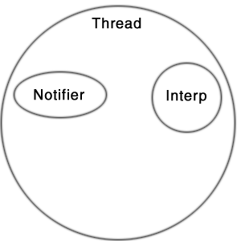
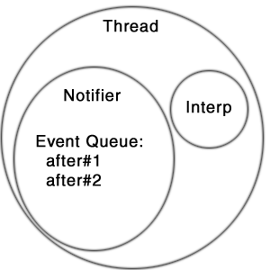
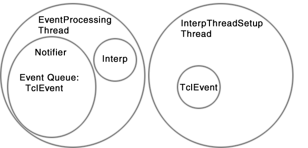
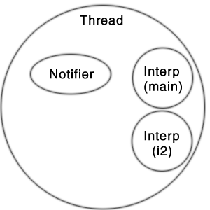

Both Tcl Blend and Jacl support evaluation of events in the Tcl event loop. It is important that developers understand how the Tcl event loop works and how it should be used. A number of Tcl features depend on the Tcl event loop, for example vwait will not work properly if Tcl events are not being processed. The event loop also implements thread synchronization in Tcl, so it must be used correctly in a multi-threaded environment like Java.
The tcl.lang.Notifier class implements event
loop processing functionality in both Jacl and Tcl Blend.
There is one Notifier object per-thread. A Thread can contain
1 to N Tcl interpreters, each interpreter in a specific
thread will have the same Notifier.
In the most simple case, a Thread would contain a single Tcl interpreter and a Notifier object.

The Notifier manages the Tcl event queue, so if the
interpreter were to invoke after commands
like the following:
after 100 {puts hi}after 200 {puts bye}
The result would look like:

Tcl events are processed using the Notifier.doOneEvent()
API. Typically, event processing is done in a loop and the
doOneEvent() method is invoked over and over again.
import tcl.lang.*;
public
class EventProcessingThread implements Runnable {
Interp interp;
public void run() {
interp = new Interp();
try {
while (true) {
interp.getNotifier().doOneEvent(TCL.ALL_EVENTS);
}
} finally {
interp.dispose();
}
}
}
The example above does not queue any events, so when the
doOneEvent() method is invoked the thread
will block waiting for an event to process. A developer
might want to setup an interp like this and then queue
up events to be processed from another thread. The
following example shows how a developer might source a
Tcl file and invoke a Tcl proc defined in that file.
import tcl.lang.*;
public
class InterpThreadSetup {
public static
String evalInOtherThread() {
EventProcessingThread r = new EventProcessingThread();
Thread t = new Thread(r);
t.start();
// Wait for other Thread to get ready
while (r.interp == null) {
try {Thread.sleep(10);} catch (InterruptedException e) {}
}
final Interp interp = r.interp;
final StringBuffer result = new StringBuffer();
TclEvent event = new TclEvent() {
public int processEvent(int flags) {
try {
interp.eval("source somefile.tcl");
interp.eval("cmd");
result.append( interp.getResult().toString() );
} catch (TclException ex) {
// Handle Tcl exceptions here
}
return 1;
}
};
// Add event to Tcl Event Queue in other thread
interp.getNotifier().queueEvent(event, TCL.QUEUE_TAIL);
// Wait for event to be processed by the other thread.
event.sync();
return result.toString();
}
}
The example above creates a EventProcessingThread object
and then waits for it to get ready. The EventProcessingThread
will start and then block inside the doOneEvent() method.
A new inner class that extends TclEvent is then created and added to
the Tcl event queue via interp.getNotifier().queueEvent().
Finally, the current thread is blocked waiting for the
EventProcessingThread to process the event. When the
processEvent method is invoked by the EventProcessingThread,
a Tcl file will be sourced and a Tcl proc named cmd will be invoked.
These two threads would look like the following:

While the example above may seem complex, each step is required to
ensure that events are processed in the correct order and that
Tcl commands are invoked in a thread safe way. Readers should
note that it is not legal to invoke interp.eval()
directly from a thread other than the one processing TclEvents
via doOneEvent(). To do so will cause a crash or
random exceptions. In the example above, the
interp.eval() method is invoked inside the
the processEvent method and that method is invoked
by a call to doOneEvent() in EventProcessingThread.
Using this approach, any number of threads can queue Tcl events
and they will be processed in the correct order.
A single thread can contain 1 to N interpreters. A developer could
create multiple Tcl interpreters in Java code via the Interp()
constructor. A developer could also use the interp command inside Tcl to create
a "child" interp. The following example uses the interp create command to
show how events in two different interpreters are processed by the same Notifier.
set i2 [interp create i2]
$i2 eval {
set name "i2"
after 100 {puts "hi $name"}
after 200 {puts "bye $name"}
}
set name "main"
after 100 {puts "hi $name"}
after 200 {puts "bye $name"}
The code above would result in a thread containing two Tcl interpreters, it would look like the following:

Both interpreters share the same Notifier object, so
events in the Tcl Event queue for this thread would be
processed in the following order:
Tcl Event Queue
after 100 {puts "hi $name"} (in i2 interp)
after 100 {puts "hi $name"} (in main interp)
after 200 {puts "bye $name"} (in i2 interp)
after 200 {puts "bye $name"} (in main interp)
The output of the above code would look like:
hi i2
hi main
bye i2
bye main
Copyright © 1997-1998 Sun Microsystems, Inc.